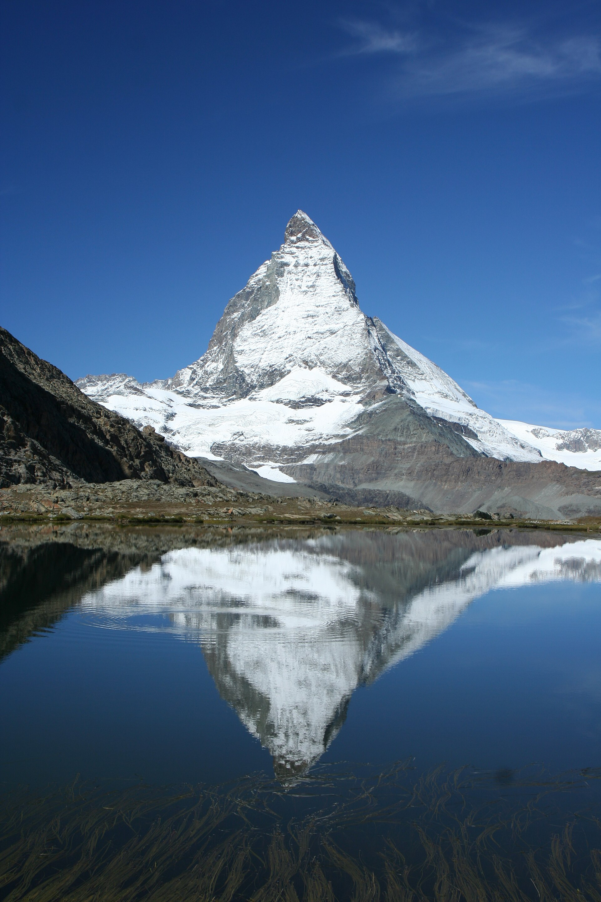
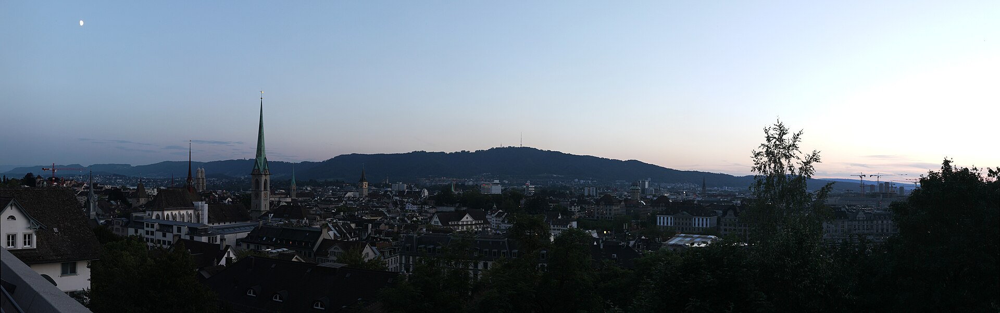
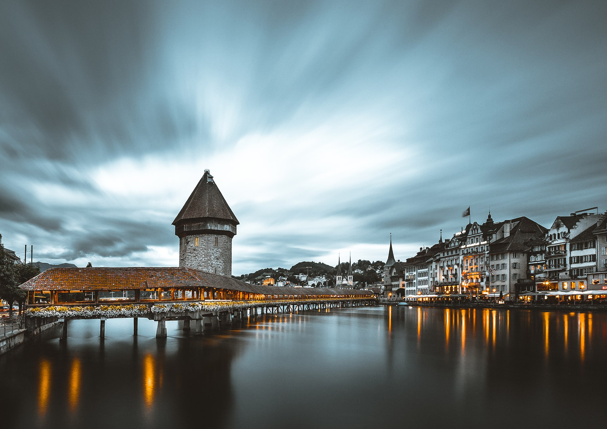
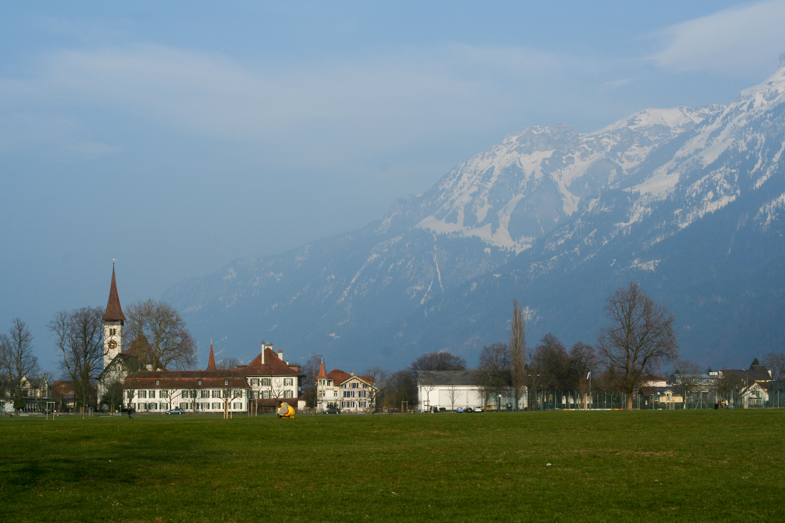
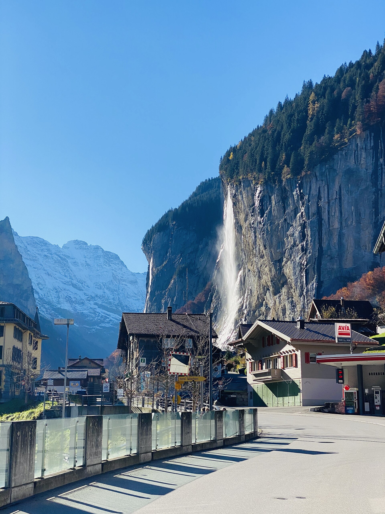
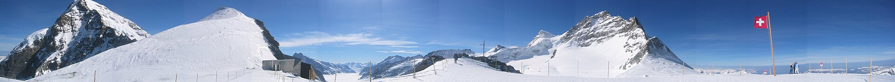

Switzerland
10 days from Salt Lake City. Photos of the loop, then where to stay, then the cost.

Day 1 · Zurich
Old town and the lake if we land early. One night max, or skip the hotel and train straight to Lucerne.

Days 1–2 · Lucerne
Stay near the station so the next morning is a one-hour train to Interlaken. Pilatus or Rigi if the weather is clear.

Days 3–6 · The hub
This is the main booking. Lauterbrunnen is 25 minutes one way, Grindelwald 35 the other. Both valleys from one hotel.

Day trip · Lauterbrunnen
Staubbach Falls, then the cable car to car-free Mürren. Stay here instead of Interlaken only if we want quiet and the view more than restaurants.

Day trip · Jungfraujoch
The Travel Pass does not fully cover this. Half Fare Card often wins if we are peak-hunting from Interlaken.
Days 7–8 · Zermatt
Car-free town. Gornergrat at sunrise if we can wake up. Then train toward Geneva or back to Zurich to fly home.
Where to stay
AMERON Luzern Hotel Flora or anything 2 minutes from the station. About $200–$280. Old town is a walk, not a taxi.
Hotel Interlaken or Hotel Krebs. Höheweg / near Ost station. About CHF 180–280. This is the one to lock first.
Hotel Oberland, waterfall view, quieter, fewer places to eat. Same Jungfrau access. Better if the photo is the point.
Hotel Pollux or similar mid-range on Bahnhofstrasse, near the station. Matterhorn-view rooms cost more. About $250–$400.
The number
$7,000–$10,000Two people, 9 nights, mid-range, from SLC. 2026 planning range.
Hotels are the second line after flights. Interlaken for four nights is the booking that makes or breaks the budget.
Mid-range for two
| Line | Low | High |
|---|---|---|
| Flights SLC–ZRH (2) | $1,500 | $2,200 |
| Hotels, 9 nights, one room | $2,000 | $3,400 |
| Swiss Travel Pass (2) | $900 | $1,000 |
| Food | $1,400 | $2,200 |
| Mountains and extras | $400 | $800 |
| Misc, ETIAS, ATM | $200 | $400 |
| Total | $6,400 | $10,000 |
Open questions
Photos: Wikimedia Commons (Matterhorn, Lauterbrunnen, Lucerne, Interlaken, Jungfraujoch, Zurich). Costs are 2026 ranges, not live quotes.